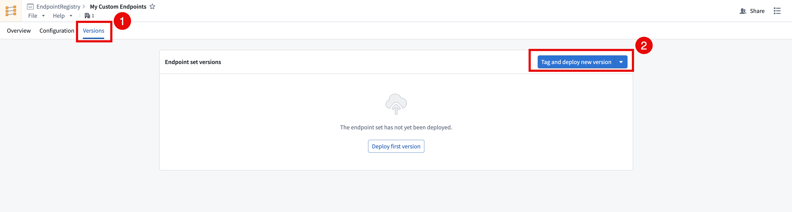
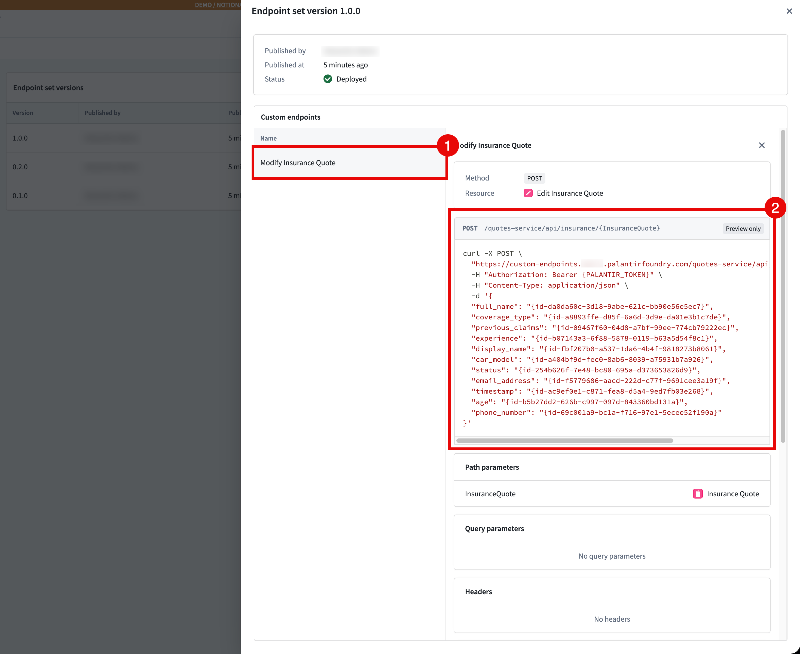
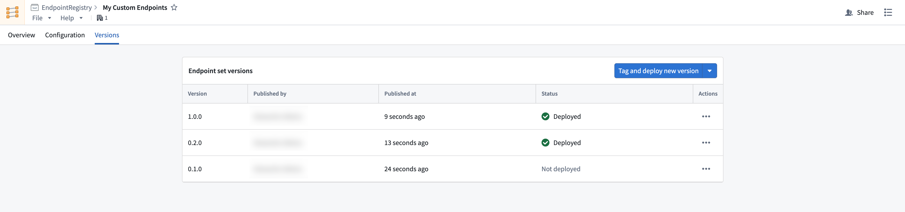

After configuring your custom endpoints, you can test and deploy them by cutting a new release of your endpoint set. Each new release is a snapshot of your current configuration, and can be managed with semantic versioning. See endpoint set publishing for more information.
Follow the instructions below to publish a new endpoint set release:

Versions should be accessible on approved subdomains immediately after the version is published and deployed. Follow the instructions below to test your custom endpoints:
FOUNDRY_TOKEN environment variable in your terminal with a user-generated token with the following command, or the equivalent for your operating system.bash
export FOUNDRY_TOKEN=<token>
In the Versions tab of your endpoint set, select your Deployed Version > Custom Endpoint and copy the example CURL request provided. You can also view the endpoint configuration here.

Run the CURL command, and you should now be able to interact directly with the ontology using your custom endpoint.
For details on using custom endpoints in production, refer to Using custom endpoints in your applications.
You can manage your releases, ensure stability, and test your endpoints with multi-version deployment. This offering allows beta, stable, and legacy versions to all be accessible on a single subdomain. You can access an endpoint's deployed version by passing in an endpoint-api-version header in your request.
